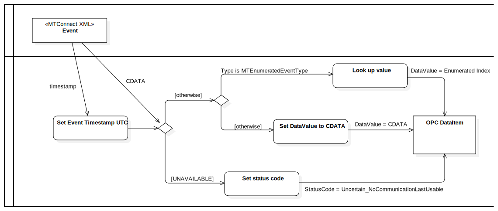

Streaming Events
UMLActivity
MTConnect
::
MTConnectDevices
::
Streaming Data
::
Streaming Events
Description
none
Diagrams

Streaming Events Diagram
Groups
Incoming XML
OPC-UA
Nodes
Look up value
Is Unavailable
Set DataValue to CDATA
OPC DataItem
Edges
(Set Event Timestamp UTC→Is Unavailable)
[UNAVAILABLE] (Is Unavailable→Set status code)
[otherwise] (Is Unavailable→Is Enumerated)
Type is MTEnumeratedEventType (Is Enumerated→Look up value)
[otherwise] (Is Enumerated→Set DataValue to CDATA)
timestamp (Event→Set Event Timestamp UTC)
DataValue = Enumerated Index (Look up value→OPC DataItem)
DataValue = CDATA (Set DataValue to CDATA→OPC DataItem)
StatusCode = Uncertain_NoCommunicationLastUsable (Set status code→OPC DataItem)
CDATA (Event→Is Unavailable)
Properties
Name
Value
name
Streaming Events
stereotype
null
visibility
public
isReentrant
true
isReadOnly
false
isSingleExecution
false
Owned Elements
Streaming Events Diagram